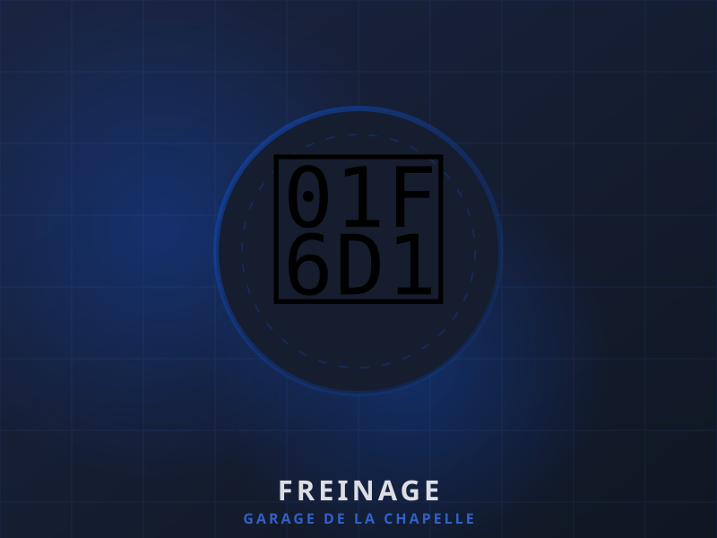

Entretien des freins : quand faut-il vraiment s'inquiéter ?

Le système de freinage est l'élément de sécurité le plus critique de votre véhicule. Pourtant, il est souvent négligé jusqu'au moment où les problèmes deviennent évidents — et potentiellement dangereux.
1. Les bruits anormaux, premier signal d'alerte
Un grincement ou crissement à chaque freinage indique généralement que les plaquettes sont usées jusqu'à l'indicateur métallique. Ce bruit est volontaire : il est conçu pour vous alerter. Si vous entendez un frottement sourd et continu, les plaquettes sont complètement usées et les disques sont endommagés.
2. Les vibrations au freinage
Si le volant ou la pédale de frein vibrent lors d'un freinage, cela peut indiquer des disques voilés (déformés par la chaleur excessive). Ce problème peut s'aggraver rapidement et nécessite une intervention.
3. La distance de freinage augmente
Si vous sentez que votre voiture met plus de temps à s'arrêter après la pédale de frein, c'est un signe grave. Vérifiez d'abord le niveau de liquide de frein. Un niveau bas peut cacher une fuite ou indiquer des plaquettes très usées.
4. Le voyant brake (frein) allumé
Sur la plupart des véhicules modernes, un voyant rouge en forme de cercle avec un « ! » indique un problème avec le système de freinage. Ne l'ignorez pas — faites vérifier le véhicule rapidement.
Fréquence de remplacement recommandée
- Plaquettes : tous les 30 000 à 80 000 km (selon conduite)
- Disques : tous les 60 000 à 120 000 km
- Liquide de frein : tous les 2 ans ou 40 000 km
Chez Garage de la Chapelle, nous effectuons un contrôle freinage gratuit lors de chaque révision. N'attendez pas les signes d'alerte pour vérifier votre système de freinage — votre sécurité en dépend.